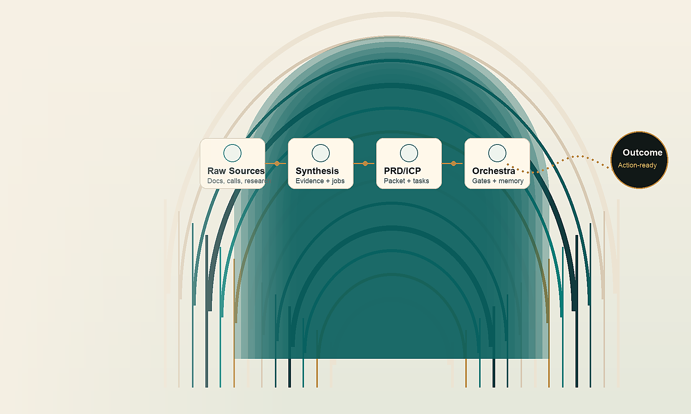

Source inventory
Approved calls, notes, tickets, docs, research, decisions, and constraints are labeled by source type and confidence.
 ArcFlow Automate
PRD/ICP operating systems
Run diagnostic
ArcFlow Automate
PRD/ICP operating systems
Run diagnostic
ArcFlow Automate for B2B SaaS product teams
We convert calls, notes, tickets, docs, research, and decisions into PRDs, ICP evidence, task matrices, and governed agent workflows with explicit proof gates.

Product teams do not need another chat window. They need a reliable way to turn fragmented knowledge into reviewed decisions, scoped work, and agent-safe execution plans.
Service-output rail
Every deliverable separates facts, interpretation, hypotheses, and gaps before anything becomes a public claim or implementation task.
Approved calls, notes, tickets, docs, research, decisions, and constraints are labeled by source type and confidence.
Problem, user, scope, buyer evidence, requirements, acceptance criteria, and unresolved gaps stay connected.
Engineering-ready tasks get owners, dependencies, review gates, acceptance states, and implementation order.
Provider, memory, browser, and writeback actions remain reviewable and blocked until explicitly approved.
Two-lane operating system
The customer-facing lane creates product clarity. The control lane keeps agent work bounded, replayable, and safe before stronger runtime claims are made.
PRD/ICP calculator
This browser-local calculator estimates PRD/ICP rework value, knowledgebase readiness, and the first safe service package. It is a planning tool, not guaranteed ROI.
Process timeline
The workflow is designed for traceability. Stronger automation is added only after the underlying evidence, approvals, and static proof are clear.
Collect only approved source zones and document the operating boundary.
Classify facts, interpretations, hypotheses, gaps, and owner decisions.
Build the PRD, ICP evidence, task sequence, and review states.
Run safety, dashboard, memory, and implementation checks before handoff.
Current public boundary